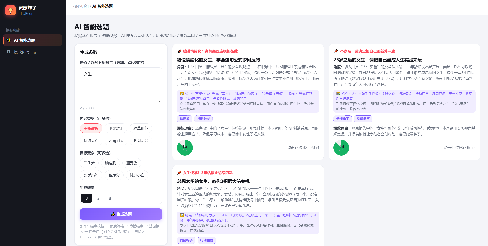
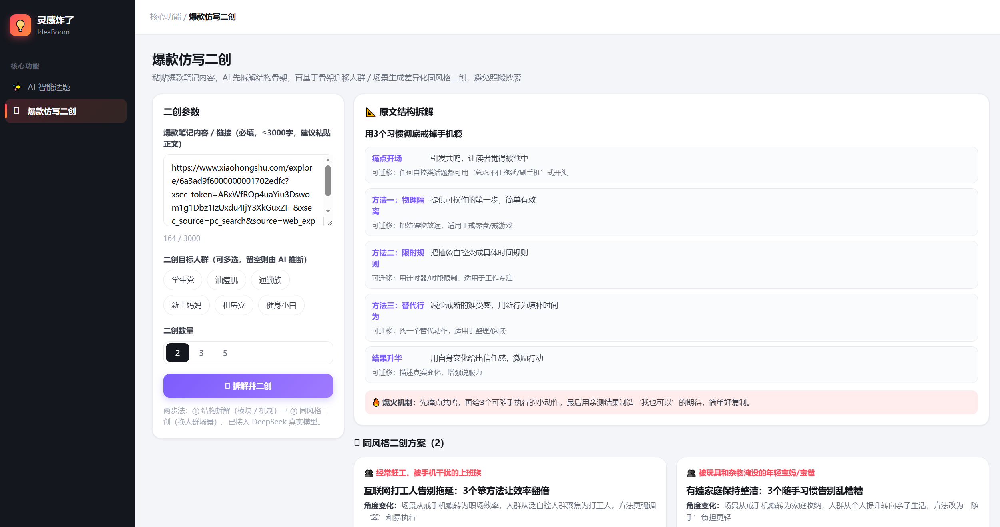
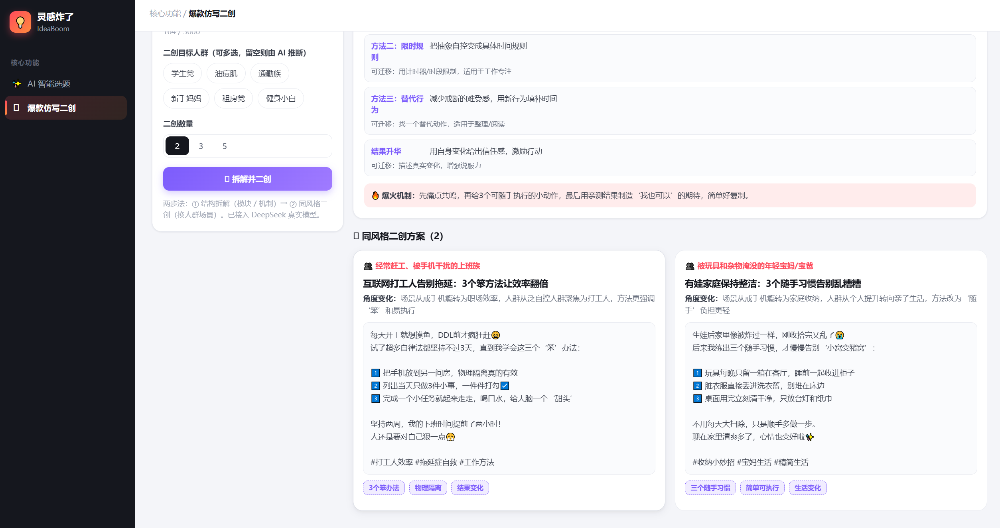

<!doctype html>
<html lang="zh-CN">
<head>
  <meta charset="utf-8" />
    <meta name="viewport" content="width=device-width, initial-scale=1" />
  <title>灵感炸了 · Pinkie<\/title>
  <meta name="description" content="灵感炸了 — 把从 0 想选题和跟爆款二创，变成有方法、有评分、有合规底线的确定性动作。" />
  <link rel="preconnect" href="https://fonts.googleapis.com" />
  <link rel="preconnect" href="https://fonts.gstatic.com" crossorigin />
  <link href="https://fonts.googleapis.com/css2?family=Inter:wght@400;500;600;700&family=JetBrains+Mono:wght@400;500&display=swap" rel="stylesheet" />
  <link rel="stylesheet" href="assets/css/tokens.css" />
  <link rel="stylesheet" href="assets/css/base.css" />
  <link rel="stylesheet" href="assets/css/components.css" />
<\/head>
<body>
  <canvas id="ambient-canvas" aria-hidden="true"><\/canvas>
  <div class="aurora-bg" aria-hidden="true">
    <span class="blob b1"><\/span><span class="blob b2"><\/span>
    <span class="blob b3"><\/span><span class="blob b4"><\/span>
  <\/div>
  <div class="scroll-progress" id="scrollProgress"><\/div>

  <header class="nav" id="nav">
    <div class="nav__inner">
      <a class="brand" href="index.html"><span class="brand__dot"><\/span>Pinkie<\/a>
      <nav class="nav__links" aria-label="主导航">
        <!-- <a href="index.html">首页<\/a> -->
        <!-- <a href="works.html">作品<\/a> -->
        <!-- <a href="creates.html">创作<\/a> -->
        <!-- <a href="about.html">关于<\/a> -->
        <!-- <a href="contact.html">联系<\/a> -->
      <\/nav>
      <button class="nav__toggle" aria-label="菜单"><span><\/span><span><\/span><span><\/span><\/button>
    <\/div>
  <\/header>

  <main>
    <article class="section detail-hero">
      <div class="container">
        <a class="back-link" href="index.html">← 返回主页<\/a>

        <!-- ① 头部定位 -->
        <div class="reveal" style="margin-top:var(--sp-5)">
          <p class="eyebrow">作品详情<\/p>
          <div class="detail-title-row">
            <h1 class="display" style="font-size:var(--fs-4xl)">灵感炸了<\/h1>
            <a class="btn btn--primary" href="https://ideaboom.pixiepoppy.com/" target="_blank" rel="noopener">前往体验 ↗<\/a>
            <a class="btn btn--ghost" href="https://github.com/Pinkie-Pie-Lucky/IdeaBoom" target="_blank" rel="noopener">查看源码 ↗<\/a>
          <\/div>
          <p class="lead muted" style="margin-top:var(--sp-4)">把「从 0 想选题」和「跟爆款二创」这两件最痛的事，变成有方法、有评分、有合规底线的确定性动作。<\/p>
          <div class="tag-row" style="margin-top:var(--sp-4)">
            <span class="tag">选题神器<\/span>
          <\/div>
        <\/div>

        <!-- 产品截图画廊：每加一个 .shot-gallery__slide 即多一张图 -->
        <div class="shot-gallery reveal" aria-label="灵感炸了 截图画廊">
          <div class="shot-gallery__track">
            <div class="shot-gallery__slide"><\/div>
            <div class="shot-gallery__slide"><\/div>
            <div class="shot-gallery__slide"><\/div>
          <\/div>
          <button class="shot-gallery__nav shot-gallery__nav--prev" type="button" aria-label="上一张"><\/button>
          <button class="shot-gallery__nav shot-gallery__nav--next" type="button" aria-label="下一张"><\/button>
          <div class="shot-gallery__dots" role="tablist" aria-label="截图导航"><\/div>
        <\/div>

        <!-- ② 问题 -->
        <div class="prose reveal">
          <h3>问题<\/h3>
          <p>做内容的人常卡在三件事上：选题靠拍脑袋、爆款命中率低；热点切入点想得慢，等想到早已凉了；看到爆款想跟，却只会照搬或抄形不抄神。<\/p>

          <!-- ③ 痛点 -->
          <h3>痛点<\/h3>
          <p>「想清楚发什么」和「把爆款拆明白再进化」是内容生产里最痛的两环，却长期靠感觉、靠运气，缺少可复用的方法。灵感炸了想把它们变成确定性动作。<\/p>

          <!-- ④ 核心能力 -->
          <h3>核心能力<\/h3>
          <ul class="feat-list">
            <li><strong>AI 智能选题<\/strong> · 输入一份热点 / 趋势报告 + 参数，按 5 步流水线产出结构化选题：痛点挖掘 → 角度嫁接 → 传播锚点设计 → 爆款基因植入 → 质量门自评。<\/li>
            <li><strong>爆款仿写二创<\/strong> · 输入一个爆款笔记链接或 ID，先结构拆解，再产出进化形态，不止抄形、更抄神。<\/li>
            <li><strong>质量门自评 & 合规底线<\/strong> · 每个选题自带评分与合规检查，让「灵感觉炸」建立在方法与底线之上。<\/li>
          <\/ul>

        <\/div>

        <!-- ⑥ 体验入口（前往体验已移至标题右侧；找我定制暂不展示，代码保留）
        <div style="margin-top:var(--sp-8)">
          <a class="btn btn--primary" href="https://ideaboom.pixiepoppy.com/" target="_blank" rel="noopener">前往体验 ↗<\/a>
          <a class="btn btn--ghost" href="contact.html" style="margin-left:var(--sp-3)">找我定制<\/a>
        <\/div>
        -->

        <!-- 返回 / 下一个 -->
        <nav class="detail-nav" aria-label="作品导航">
          <a href="work-pillowmist.html"><div class="k">← 上一个<\/div><div class="v">枕边雾<\/div><\/a>
          <a class="next" href="work-cosmicbug.html"><div class="k">下一个 →<\/div><div class="v">宇宙草台班子大质检<\/div><\/a>
        <\/nav>
      <\/div>
    <\/article>
  <\/main>

  <footer class="footer">
    <div class="container footer__inner">
      <a class="brand" href="index.html"><span class="brand__dot"><\/span>Pinkie<\/a>
      <nav class="footer__links" aria-label="页脚导航">
        <a href="works.html">作品<\/a><a href="creates.html">创作<\/a><a href="about.html">关于<\/a><a href="contact.html">联系<\/a>
        <a href="#" rel="noopener">X / Twitter<\/a><a href="#" rel="noopener">GitHub<\/a>
      <\/nav>
      <p class="footer__copy">© 2026 Pinkie · 用 vibe 打造<\/p>
    <\/div>
  <\/footer>

  <script src="assets/js/ambient.js?v=20260811b"><\/script>
<\/body>
<\/html>
